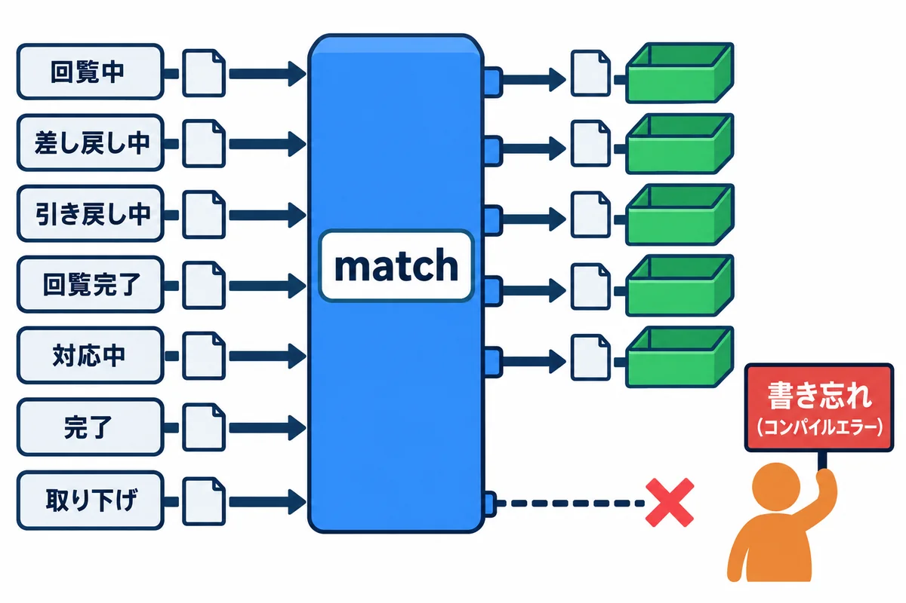
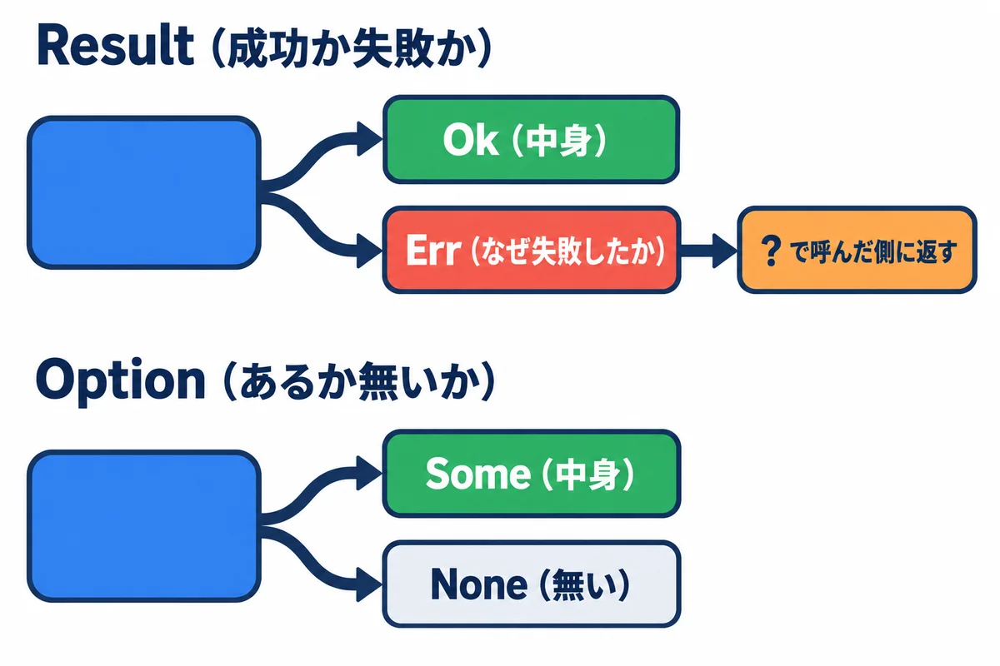
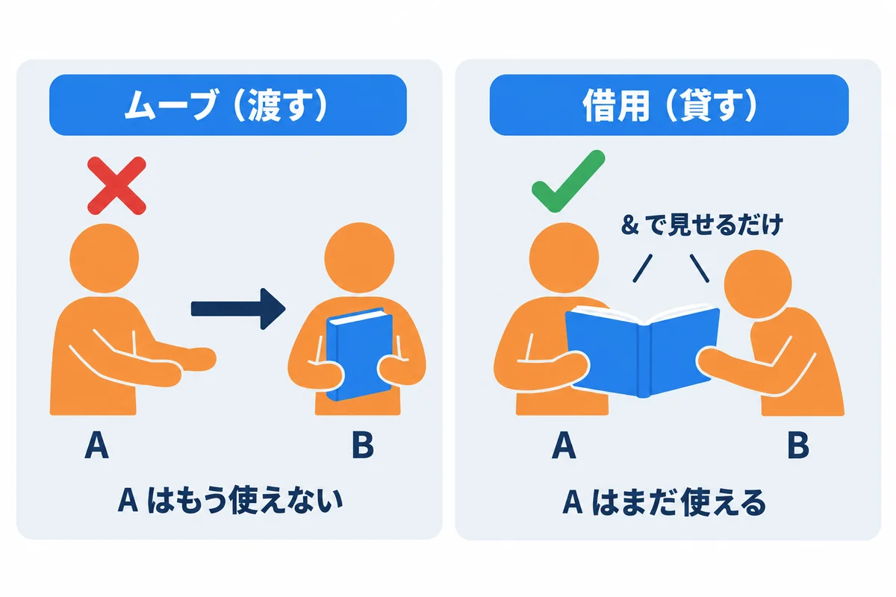
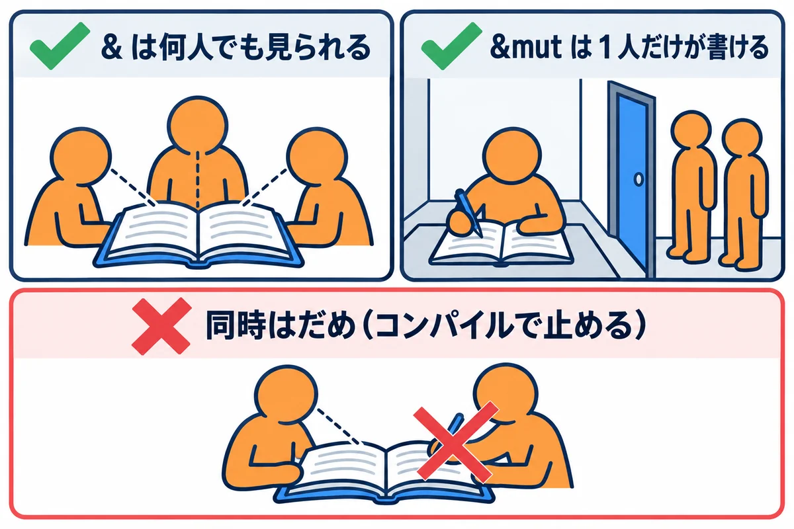
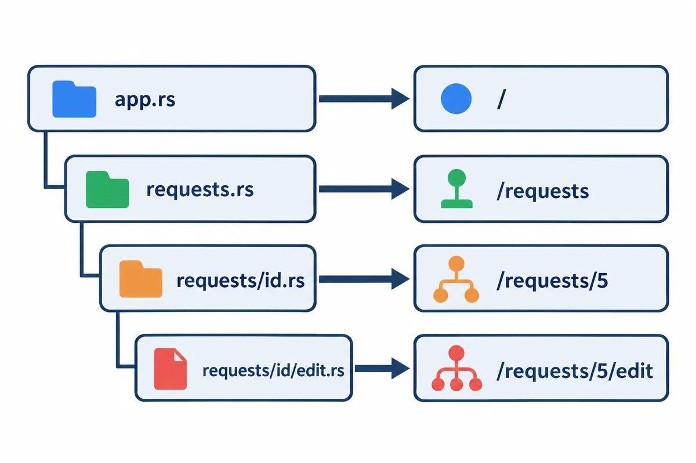
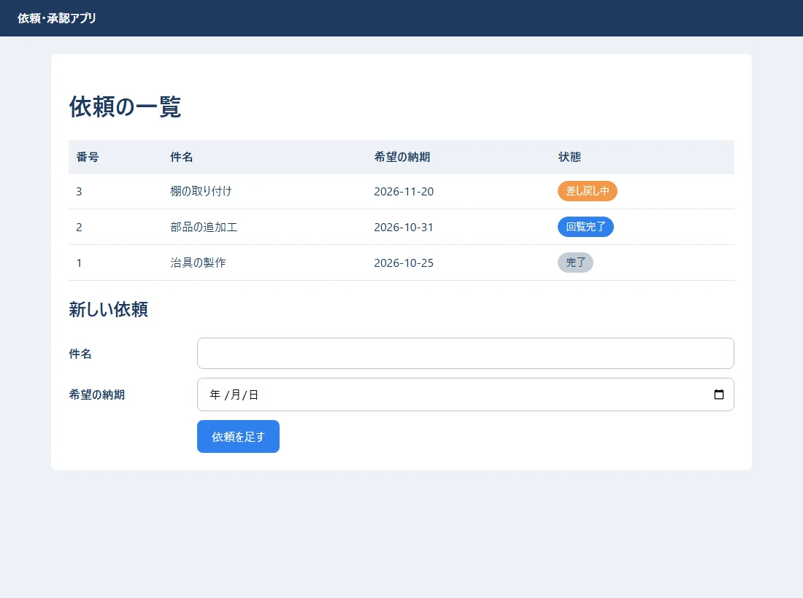
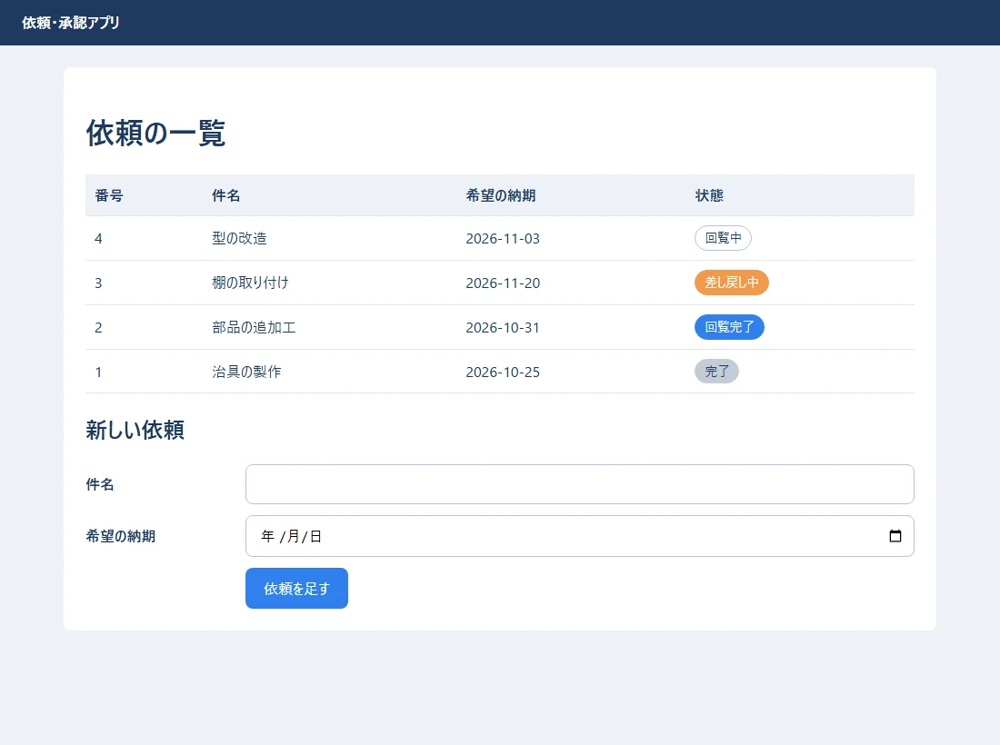
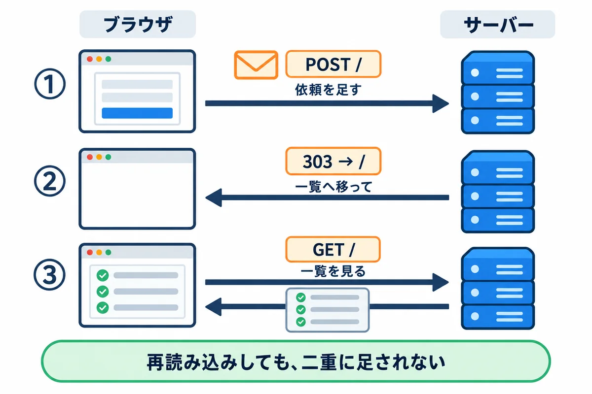
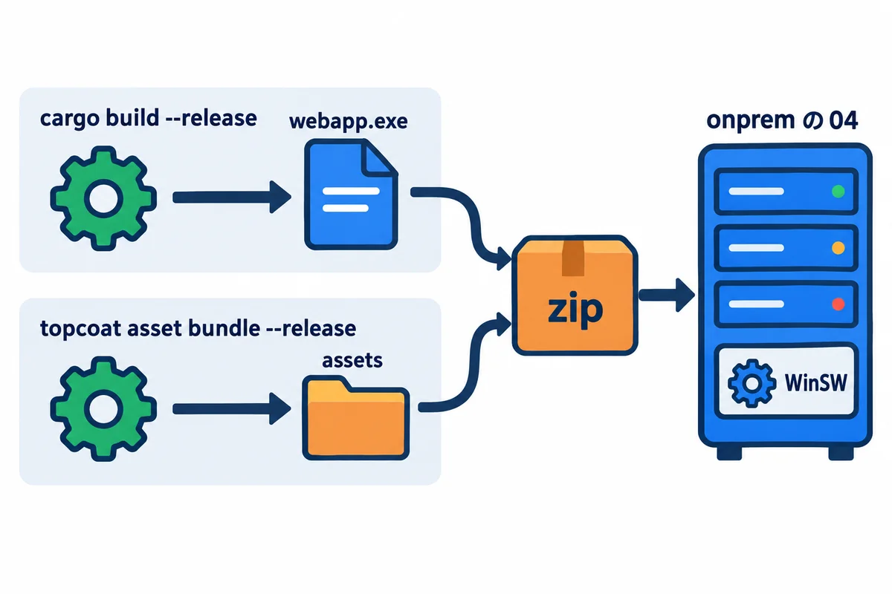

色の付いた枠のコードの、右上の「コピー」ボタンを押してください。コピーしたら、ブラウザーの「戻る」で PDF に戻れます。
もう 1 つの作り方、Rust＋Topcoat の入口です。Rust はとても奥が深いので、この巻では、練習アプリ（08）を読むのに要る所だけを、これまでの巻（TypeScript・Python）と比べながら説明します。
Rust/ に、Rust と Topcoat を、ゼロから完成まで学ぶ全 14 巻があります。この巻の各章の終わりに、対応する巻を書いています。samples/07_rust_topcoat/ にあります。結果とエラーの文は、Rust 1.99.1・Topcoat 0.11.0 で実際に動かした物です。| 練習のフォルダ | 中身 |
|---|---|
status/ |
依頼の状態を Rust で書いた物（cargo run・cargo test） |
mistake/ |
わざと間違えた例（cargo build で、エラーの文を見る） |
hello/ |
いちばん小さな Topcoat のアプリ（依頼の一覧と入力） |
開発用のパソコン（Windows）に、Rust と Topcoat の道具を入れます（この資料集では、会社のサーバーに合わせて Windows のまま作ります）。
▶ 準備: 00 の 6.6 のとおり、Rust/00 の「はじめに: 手を動かす準備」の P-1〜P-4 で、Build Tools と Rust を入れておきます。そのあと、PowerShell（どのフォルダにいてもよい）で、下の 4 行を 1 行ずつ打ちます。cargo install は、Topcoat の道具をダウンロードして作るので、数分かかります。くわしい説明（版の選び方など）は Rust/01 にあります。
rustc --version # rustc 1.99.1
cargo --version # cargo 1.99.1
cargo install topcoat-cli --version 0.11.0 --locked
topcoat --version # topcoat 0.11.0
▶ ここで初めて出てくるコード
rustc（Rust の道具）: Rust のコンパイラー（翻訳する係）。人が書いた.rsのファイルを、パソコンが直接動かせる実行ファイル（.exe）に翻訳します。ふだんは直接打たず、cargoが中で呼んでくれます。rustc --versionで版を確かめられます。cargo（Rust の道具）: Rust のプロジェクトをまとめて世話する道具。cargo new（作る）・cargo run（翻訳して動かす）・cargo build（翻訳だけ）・cargo test（テスト）・cargo add（部品を足す）のように、後ろに「何をするか」を付けて使います。cargo --versionで版を確かめられます。cargo install（cargo のコマンド）: Rust で作られた道具（コマンド）を、パソコンに入れるコマンド。cargo install topcoat-cli --version 0.11.0 --lockedは、Topcoat の道具topcoatを、決まった版で入れます。topcoat（Topcoat）: Topcoat の道具のコマンド（cargo install topcoat-cliで入る）。topcoat dev（コードを直すと自動で作り直して読み直す開発用の起動）・topcoat asset bundle（CSS などの束を作る）などがあります。
| 道具 | 役目 | Python・Node.js では |
|---|---|---|
rustc |
Rust のコンパイラ（プログラムを実行ファイルに変える） | （無い。Python はそのまま動かす） |
cargo |
部品の管理・ビルド・テスト・実行 | pip・npm に近い |
Cargo.toml |
使う部品と版を書くファイル | requirements.txt・package.json |
topcoat |
Topcoat の道具（新しいアプリを作る・画面の部品を束ねる・開発用のサーバー） | django-admin・vite に近い |
用語: コンパイル（プログラムを、パソコンがそのまま動かせる形（実行ファイル）に変えること。Rust は、このときに多くの間違いを見つける）
status/src/lib.rs:
//! 依頼の状態と、状態の移り変わり（02 の status.ts・04 の status.py を Rust で書いた物）
use std::fmt;
/// 依頼の状態。この 7 つ以外は作れない
#[derive(Debug, Clone, Copy, PartialEq, Eq)]
pub enum Status {
Circulating,
Returned,
PulledBack,
Approved,
InProgress,
Done,
Withdrawn,
}
impl Status {
/// 画面に出す名前
pub fn label(self) -> &'static str {
match self {
Status::Circulating => "回覧中",
Status::Returned => "差し戻し中",
Status::PulledBack => "引き戻し中",
Status::Approved => "回覧完了",
Status::InProgress => "対応中",
Status::Done => "完了",
Status::Withdrawn => "取り下げ",
}
}
}
/// 状態を変える操作
#[derive(Debug, Clone, Copy, PartialEq, Eq)]
pub enum Action {
ApproveAll,
Return,
PullBack,
Resubmit,
Withdraw,
Assign,
HandOver,
}
/// できない操作をしようとしたときのエラー
#[derive(Debug, PartialEq, Eq)]
pub struct TransitionError {
pub status: Status,
pub action: Action,
}
impl fmt::Display for TransitionError {
fn fmt(&self, f: &mut fmt::Formatter<'_>) -> fmt::Result {
write!(f, "「{}」の依頼に {:?} はできません", self.status.label(), self.action)
}
}
impl std::error::Error for TransitionError {}
/// 今の状態と操作から、次の状態を返す。できない操作なら Err
pub fn next_status(current: Status, action: Action) -> Result<Status, TransitionError> {
use Action::*;
use Status::*;
match (current, action) {
(Circulating, ApproveAll) => Ok(Approved),
(Circulating, Return) => Ok(Returned),
(Circulating, PullBack) => Ok(PulledBack),
(Returned | PulledBack, Resubmit) => Ok(Circulating),
(Returned | PulledBack, Withdraw) => Ok(Withdrawn),
(Approved, Assign) => Ok(InProgress),
(InProgress, HandOver) => Ok(Done),
_ => Err(TransitionError { status: current, action }),
}
}
/// 依頼 1 件
#[derive(Debug)]
pub struct Request {
pub id: u32,
pub title: String,
pub status: Status,
pub comments: Vec<String>,
}
impl Request {
pub fn new(id: u32, title: &str) -> Request {
Request { id, title: title.to_string(), status: Status::Circulating, comments: Vec::new() }
}
/// 操作をして、状態を進める。できなければ、状態は変えずに Err を返す
pub fn apply(&mut self, action: Action) -> Result<(), TransitionError> {
self.status = next_status(self.status, action)?; // ? は「Err ならここで返す」
Ok(())
}
}
#[cfg(test)]
mod tests {
use super::*;
#[test]
fn 差し戻してから出し直すと回覧中に戻る() {
let mut r = Request::new(1, "治具の製作");
r.apply(Action::Return).unwrap();
assert_eq!(r.status, Status::Returned);
r.apply(Action::Resubmit).unwrap();
assert_eq!(r.status, Status::Circulating);
}
#[test]
fn 完了した依頼は差し戻せない() {
let err = next_status(Status::Done, Action::Return).unwrap_err();
assert_eq!(err.to_string(), "「完了」の依頼に Return はできません");
}
#[test]
fn できない操作では状態が変わらない() {
let mut r = Request::new(2, "部品の追加工");
assert!(r.apply(Action::HandOver).is_err());
assert_eq!(r.status, Status::Circulating);
}
}
▶ ここで初めて出てくるコード
write!（文字列）:println!と同じ書き方で、画面ではなく、決めた書き込み先に書くマクロ。Displayを実装する時のwrite!(f, "…")は、「表示する文をfに書く」という意味です。assert_eq!（テスト）: 「2 つの値が同じか」を確かめるマクロ。assert_eq!(実際の値, 期待する値);。違う時はテストが失敗し、left（実際）とright（期待）の値を表示します。assert!（テスト）: 「条件がtrueか」を確かめるマクロ。assert!(is_valid(&title));。falseならテストが失敗します。use（モジュール）: ほかの場所にある道具に、短い名前で呼べるようにする宣言。use std::env;と書くと、std::env::args()をenv::args()と短く書けます。stdは Rust に最初から付いている道具箱（標準ライブラリ）です。pub（モジュール）: 「外から使ってよい」（公開）という印。pub fn title_length(…)は、ほかのファイル（モジュール）からも呼べる関数になります。付けないと、同じモジュールの中からしか使えません。enum（型とメソッド）: 「いくつかの種類のうち、どれか 1 つ」を表す型（列挙型）。enum Filter { All, Active, Done }のように種類を並べ、matchで種類ごとに処理を分けます。種類ごとに違うデータを持たせることもできます。impl（型とメソッド）: 2 つの使い方があります。①impl 型 { … }で、その型にメソッド（関数）を付ける。②impl Viewのように型の場所に書くと、「Viewの機能を持つ何かの型」という意味になります（戻り値の型を細かく書かずに済む）。fn（関数）: 関数（ひとまとまりの処理に名前を付けた物）を作る書き方。fn main() { … }のmainは、プログラムを動かすと最初に動く特別な関数です。fn add(a: i32, b: i32) -> i32 { a + b }は「整数を 2 つ受け取って、整数を返す関数add」。{ }の中が中身で、最後の;の無い式が戻り値になります。self（型とメソッド）: メソッドの中で「このもの自身」を表す名前。implの中のfn label(&self)の&selfは「自分を借りて読むだけ」、&mut selfは「自分を書きかえる」という意味です。useの中のself（例:use std::io::{self, Write};）は「ioそのもの」を表します。static（変数）: プログラムが動いている間、ずっとある値。&'static strは「プログラムの中に書いた、ずっと消えない文字列」を借りている型です（"回覧中"のような文字列はこの型）。match（場合分け）: 値の形に合わせて、処理を分ける書き方。match 値 { 形1 => 処理1, 形2 => 処理2 }と書き、上から順に合う物を探します。全部の場合を書かないとコンパイルが通らないので、書き忘れを防げます。_ =>は「それ以外全部」です。struct（型とメソッド）: いくつかの値をまとめて、新しい型を作る書き方（構造体）。struct Note { id: u32, title: String }で、「番号と題名を持つノート」という型ができます。Note { id: 1, title: "買い物".to_string() }で 1 つ作ります。for（くり返し）: 並びや範囲から 1 つずつ取り出して、くり返す書き方。for n in 1..=100 { … }は、nに 1, 2, …, 100 を順に入れて、中を 100 回動かします。for x in &vで、Vecの中身を借りて回せます。mut（変数）: 「あとで変えてよい」という印。let mut total = 0;と書くと、total += 10;のように値を変えられます。付けないと変えられません（変えようとすると、コンパイルのエラーで教えてくれます）。mod（モジュール）: コードをまとめる箱（モジュール）を作る書き方。mod tests { … }のように、関係する関数をまとめます。mod 名前;と書くと、別のファイル（名前.rs）の中身を読み込みます。super（モジュール）: 「1 つ外側のモジュール」を表す名前。テストの中のuse super::*;は、「外側（テストする本体）にある物を全部使えるようにする」という決まり文句です。let（変数）: 値に名前を付けて覚えておく（変数を作る）書き方。let age = 20;で、ageという名前で 20 を覚えます。最初は「変えられない」変数です。あとで変えたい時はlet mut age = 20;のようにmutを付けます。#[derive]（型とメソッド）: 型に、よく使う機能を自動で付ける印（属性）。#[derive(Debug, Clone, PartialEq)]のように、付けたい機能の名前を並べます（例:Debug→{:?}で表示できる、Clone→.clone()できる）。#[cfg]（テスト）: 「この条件の時だけ、この部分を翻訳する」という印（属性）。#[cfg(test)]を付けた部分は、cargo testの時だけ翻訳され、ふつうの実行ファイルには入りません。#[test]（テスト）: 「この関数はテストです」という印（属性）。cargo testが、この印の付いた関数を全部探して動かします。.to_string()（文字列）: 値を、自分の物の文字列（String）に変えるメソッド。"abc".to_string()や42.to_string()のように使います。.unwrap()（エラー処理）:OptionやResultから中身を取り出すメソッド。中身が無い（失敗した）時は、その場でプログラムが止まります（パニック）。練習や「絶対に失敗しない」と分かっている所だけで使い、本番のコードでは?やunwrap_orを使います。.unwrap_err()（テスト）:ResultがErrの時に、そのエラーを取り出すメソッド。Okだった時は止まります。テストで「ちゃんと失敗するか」を確かめる時に使います。.is_err()（エラー処理）:ResultがErr（失敗）ならtrueを返すメソッド。Vec::new()（Vec（並び））: 空のVecを作る関数。あとでpushで足すので、let mut v = Vec::new();のようにmutを付けます。中身の型は、足す物から Rust が推し量ります。Debug（型とメソッド）:{:?}で中身を表示できる機能（トレイト）。#[derive(Debug)]を付けた型は、println!("{:?}", 値)で中身を確かめられます。Clone（型とメソッド）:.clone()で値を丸ごと複製できる機能（トレイト）。#[derive(Clone)]で付けます。Copy（型とメソッド）: 代入や関数に渡した時に、移る（ムーブ）のではなく、自動で写される機能（トレイト）。数やboolのような小さな値が持っています。#[derive(Clone, Copy)]で自分の型にも付けられます（中身が全部Copyの時だけ）。PartialEq（型とメソッド）:==と!=で比べられる機能（トレイト）。#[derive(PartialEq)]で付けます。Eq（型とメソッド）:==の比べ方が、いつも筋が通っている（自分と比べると必ず等しい）ことを表す印（トレイト）。HashMapのキーにする型などに要ります。PartialEqと一緒に#[derive]で付けます。Display（型とメソッド）:{}で表示できる機能（トレイト）。利用者に見せる形を自分で決めたい時に、impl fmt::Display for 型 { fn fmt(…) { … } }と書いて実装します（Debugは開発者向けの表示）。Formatter（型とメソッド）:DisplayやDebugの実装の中で受け取る「書き込み先」。write!(f, "…")で、そこに表示する文を書きます。Result（エラー処理）: 「うまくいった（Ok(値)）」か「失敗した（Err(エラー)）」かのどちらかを入れる型。失敗するかもしれない関数は、Resultを返します。受け取った側は、matchで両方の場合を書くか、?（失敗ならその場で呼び出し元へ返す）で受け取ります。Result<Request, String>は「うまくいけばRequest、失敗なら説明の文字列」です。Error（エラー処理）: エラーを表す型が守る決まりごと（トレイト）。use std::error::Error;と書くと、.source()（元になったエラー）などを使えます。Box<dyn Error>は「どんなエラーでも入る箱」です。Ok（エラー処理）:Resultの「うまくいった」の方。Ok(値)の形で結果を包みます。Ok(())は「うまくいった。返す値は特に無い（()は空っぽの値）」という意味で、Result<()>を返す関数の最後によく書きます。Err（エラー処理）:Resultの「失敗した」の方。Err(エラー)の形で、何が起きたかを包みます。matchでErr(e) => …と書くと、エラーをeで受け取れます。?を付けると、Errの時はその場で呼び出し元へ返します。String（文字列）: 自分の物として持つ、変えられる文字列の型。後ろに足す（push_str）・書きかえる、ができます。"…"と書いた文字列は&str（借りている読むだけの文字列）で、関数の引数は&strにしておくと、どちらも渡せます。Vec（Vec（並び））: 同じ種類の値を、順番に並べて持つ入れ物（ベクタ）。Vec<i32>は「整数の並び」、Vec<String>は「文字列の並び」です。vec![…]かVec::new()で作り、pushで足し、len()で数を数え、v[0]やv.get(0)で取り出します。?（エラー処理）:ResultやOptionの後ろに付ける記号。「成功なら中身を取り出して先へ進む。失敗なら、その場で関数を終えて、エラーを呼び出し元へ返す」という意味です。let text = fs::read_to_string("a.txt")?;のように使います。?を使える関数は、戻り値がResult（またはOption）の関数だけです。&mut（所有権と借用）: 「書きかえてよい」という約束で値を貸す書き方。read_to_string(&mut text)は、関数にtextを貸して、中身を書き込んでもらいます。貸す元の変数はlet mut textのようにmutが付いている必要があります。=>（場合分け）:matchの中で「この形なら、→ この処理」をつなぐ矢印。Some(name) => println!("{name}"),は「値があったら、その名前を表示」という意味です。

| 書き方 | 意味 | TypeScript（02）・Python（04）では |
|---|---|---|
enum Status { Circulating, … } |
決まった値だけの型 | ユニオン型・StrEnum |
match (current, action) { … } |
値の組み合わせで分ける。全部の場合を書かないと、コンパイルエラー | switch と never・辞書の表 |
(Returned \| PulledBack, Resubmit) |
2 つのどちらでも | case を並べる |
_ => |
それ以外、全部 | default |
Result<Status, TransitionError> |
成功（Ok）か失敗（Err）か |
例外（raise・throw） |
#[derive(Debug, Clone, Copy, PartialEq, Eq)] |
表示・複製・比べるなどの決まった機能を、自動で付ける | @dataclass に近い |
impl Status { fn label(self) … } |
その型の関数（メソッド） | クラスのメソッド |
#[cfg(test)] mod tests |
テスト。cargo test で動く |
tests.py |
cargo test の結果（実際の出力の一部）:
test tests::できない操作では状態が変わらない ... ok
test tests::完了した依頼は差し戻せない ... ok
test tests::差し戻してから出し直すと回覧中に戻る ... ok
test result: ok. 3 passed; 0 failed; 0 ignored; 0 measured; 0 filtered out; finished in 0.00s
もっと詳しく:
Rust/02_Rust基礎_値_型_制御_データ構造.md、Rust/04_Rust設計_型_trait_エラー_Cargo_テスト.md

Rust には、例外（raise・throw）がありません。失敗するかもしれない関数は Result を返し、無いかもしれない値は Option で表します。呼んだ側が、失敗と「無い」を必ず扱うように、型が強制します。
| 書き方 | 意味 |
|---|---|
Ok(値)・Err(エラー) |
成功・失敗 |
Some(値)・None |
ある・無い |
next_status(...)? |
Err なら、ここで呼んだ側へ返す（? 演算子） |
match r { Ok(..) => …, Err(e) => … } |
成功と失敗で分ける |
if let Some(r) = find(...) { … } |
あるときだけ使う |
.unwrap() |
失敗ならプログラムを止める。テストや「絶対に失敗しない」所だけで使う |


Rust のいちばんの特徴が、所有権です。値には、いつも持ち主（変数）が 1 つだけあります。この決まりのおかげで、メモリーの間違いや、同時に書きかえる事故を、コンパイルのときに止められます。
status/src/main.rs:
//! Rust の基本の練習: 所有権・借用・Option・Result・イテレーター
use status::{Action, Request, Status};
/// 借用（&）: 中身を見るだけ。持ち主は変わらない
fn print_request(r: &Request) {
println!("{} {}（{}）", r.id, r.title, r.status.label());
}
/// 見つからないかもしれないときは Option
fn find(list: &[Request], id: u32) -> Option<&Request> {
list.iter().find(|r| r.id == id)
}
fn main() {
let mut list = vec![Request::new(1, "治具の製作"), Request::new(2, "部品の追加工"), Request::new(3, "棚の取り付け")];
// 1. 借用して表示する（list は、このあとも使える）
for r in &list {
print_request(r);
}
// 2. 書きかえるときは &mut（同時に 1 か所だけ）
list[0].apply(Action::Return).unwrap();
list[0].comments.push("【11/02 09:00 回覧者1 佐藤】寸法を追記してください".to_string());
list[1].apply(Action::ApproveAll).unwrap();
// 3. Result: できない操作は Err で返ってくるので、match で分ける
match list[2].apply(Action::HandOver) {
Ok(()) => println!("引き渡しました"),
Err(e) => println!("エラー: {e}"),
}
// 4. Option: 見つかったときだけ使う
if let Some(r) = find(&list, 1) {
println!("1 番のコメント: {:?}", r.comments);
}
println!("99 番はあるか: {}", find(&list, 99).is_some());
// 5. イテレーター（TypeScript の filter・map と同じ考え方）
let circulating: Vec<&str> =
list.iter().filter(|r| r.status == Status::Circulating).map(|r| r.title.as_str()).collect();
println!("回覧中: {circulating:?}");
// 6. 所有権の移動（ムーブ）: title を別の変数に渡すと、元の変数は使えなくなる
let title = String::from("型の改造");
let moved = title; // ここで持ち主が moved に移る
// println!("{title}"); // ← これはコンパイルエラーになる（所有権が移ったため）
println!("移った先: {moved}");
}
▶ ここで初めて出てくるコード
println!（画面に出す）: かっこの中の文字を画面に出して、最後に改行するマクロ。println!("Hello, world!");はHello, world!と表示します。{}を書くと、後ろに並べた値がそこに入ります（例:println!("{}点", 80);→80点）。名前の最後の!は「マクロ」（コードを作り出す特別な仕組み）の印で、ふつうの関数と見分けるために付いています。vec!（Vec（並び））:Vec（ベクタ：同じ種類の値を、順番に並べて持つ入れ物）を、中身を書いて作るマクロ。vec![80, 95, 70]は、80・95・70 の 3 つが入った並びです。scores[0]で最初の 80 を取り出せます（番号は 0 から数えるので、3 つなら使える番号は 0・1・2）。範囲の外の番号（scores[10]など）を使うと、プログラムは止まります（パニック）。あとからpushで足したり、len()で数を数えたりできます。in（くり返し）:for 名前 in 並びの一部で、「この並びの中から」という意味です。if（条件）: 条件によって処理を分ける書き方。if 条件 { 合う時 } else { 合わない時 }。条件はtrue・falseになる式（age >= 20など）で、( )で囲む必要はありませんが、{ }は必ず要ります。.iter()（イテレーター）: 並び（Vecなど）の中身を、借りて 1 つずつ取り出せる形（イテレーター）にするメソッド。for x in v.iter()や、v.iter().map(…)・.filter(…)のように、加工してから使う時の入り口です。.push()（Vec（並び））: 後ろに 1 つ足すメソッド。Vecならv.push(10);で 10 を足し、Stringならs.push('!');で 1 文字足します。mutの付いた変数に使います。.is_some()（Option）:OptionがSome（値がある）ならtrueを返すメソッド。値そのものは要らず、あるかどうかだけ知りたい時に使います。.filter()（イテレーター）: 条件に合う物だけを残すメソッド。v.iter().filter(|n| **n % 2 == 0)は偶数だけ。|n|の中のnは借りた値なので、*が付くことがあります。.map()（イテレーター）: 中身を 1 つずつ変換するメソッド。イテレーターならv.iter().map(|x| x * 2)で全部を 2 倍に、OptionならSomeの中身だけを変換します（NoneはNoneのまま）。ResultならOkの中身だけを変換します。.as_str()（文字列）:String（持ち主のいる文字列）を、借りた&strとして見せるメソッド。&strを受け取る関数に渡す時などに使います。.collect()（イテレーター）: 1 つずつ取り出せる形（イテレーター）の中身を、VecやStringなどの入れ物に集めるメソッド。何に集めるかを、let v: Vec<&str> = ….collect();のように変数の型で教えます。String::from()（文字列）:"…"（&str）から、自分の物の文字列（String）を作る関数。String::from("こんにちは")。"こんにちは".to_string()と同じです。Option（Option）: 「値があるかもしれないし、無いかもしれない」を表す型。中身はSome(値)かNone。Option<u32>は「整数があるかもしれない」。取り出す時はmatch・if let・unwrap_orなどを使います。Some（Option）:Option（値が「ある」か「無い」か）の、「ある」の方。Some(値)の形で中身を包みます。matchでSome(name) => { … }と書くと、中身をnameという名前で取り出して使えます。「無い」の方はNoneです。|x|（クロージャ）（関数）: その場で作る小さな関数（クロージャ）。|x| x * 2は「xを受け取って 2 倍を返す関数」です。| |の間が引数です。並べかえの基準やエラーの時の処理などを、ほかの関数に渡す時によく使います。
動かした結果（cargo run）:
1 治具の製作（回覧中）
2 部品の追加工（回覧中）
3 棚の取り付け（回覧中）
エラー: 「回覧中」の依頼に HandOver はできません
1 番のコメント: ["【11/02 09:00 回覧者1 佐藤】寸法を追記してください"]
99 番はあるか: false
回覧中: ["棚の取り付け"]
移った先: 型の改造
わざと間違えると: mistake/src/main.rs には、2 つの間違いを入れてあります。
// わざと間違えた例（2 つ）。cargo build で、コンパイラがどう教えてくれるかを見る
#[derive(Clone, Copy)]
enum Status {
Circulating,
Returned,
Done,
}
fn label(s: Status) -> &'static str {
match s {
Status::Circulating => "回覧中",
Status::Returned => "差し戻し中",
// 間違い 1: Status::Done の場合を書き忘れた
}
}
fn main() {
let title = String::from("型の改造");
let moved = title;
println!("{title}"); // 間違い 2: 所有権が moved に移った後で、title を使った
println!("{moved} {}", label(Status::Done));
}
cargo build の結果（実際の出力）:
error[E0004]: non-exhaustive patterns: `Status::Done` not covered
--> src\main.rs:11:11
|
11 | match s {
| ^ pattern `Status::Done` not covered
|
note: `Status` defined here
--> src\main.rs:4:6
|
4 | enum Status {
| ^^^^^^
...
7 | Done,
| ---- not covered
= note: the matched value is of type `Status`
help: ensure that all possible cases are being handled by adding a match arm with a wildcard pattern or an explicit pattern as shown
|
13 ~ Status::Returned => "差し戻し中",
14 ~ Status::Done => todo!(),
|
error[E0382]: borrow of moved value: `title`
--> src\main.rs:21:16
|
19 | let title = String::from("型の改造");
| ----- move occurs because `title` has type `String`, which does not implement the `Copy` trait
20 | let moved = title;
| ----- value moved here
21 | println!("{title}"); // 間違い 2: 所有権が moved に移った後で、title を使った
| ^^^^^ value borrowed here after move
|
help: consider cloning the value if the performance cost is acceptable
|
20 | let moved = title.clone();
| ++++++++
Some errors have detailed explanations: E0004, E0382.
For more information about an error, try `rustc --explain E0004`.
error: could not compile `mistake` (bin "mistake") due to 2 previous errors
E0004）は、match で Status::Done の場合を書き忘れた、という意味です。状態を足したときの書き忘れを、動かす前に見つけてくれます（02 の never と同じ働き）。E0382）は、title の持ち主が moved に移った（ムーブした）後で、title を使った、という意味です。help: に直し方の案が出ています。Rust のエラーの文は長いですが、error[…]: の行、--> のファイルと行、help: の 3 か所を読めば、たいてい分かります。もっと詳しく:
Rust/03_Rust中核_所有権_借用_ライフタイム_スマートポインタ.md

Topcoat は、Rust の Web フレームワークです。Django と違い、サーバーで HTML を作って返す作りが中心です（03 の 7 章の「サーバーで画面を作る」）。
cd webapp_learning\samples\07_rust_topcoat
topcoat new hello --minimal # いちばん小さなアプリを作る（練習のフォルダには、作って直した物がある）
cd hello
topcoat dev # 開発用のサーバー（直すと自動で作り直して、画面を読み直す）
hello/Cargo.toml:
[package]
name = "hello"
version = "0.1.0"
edition = "2024"
# 版は = で固定する（Rust/ の巻と同じ考え方）
[dependencies]
serde = { version = "=1.0.229", features = ["derive"] }
tokio = { version = "=1.54.1", features = ["macros", "rt-multi-thread"] }
topcoat = { version = "=0.11.0", default-features = false, features = ["asset", "discover", "router", "serve", "view"] }
[profile.dev]
debug = "line-tables-only"
[profile.dev.package."*"]
debug = false
hello/src/app.rs（画面）:
//! いちばん小さな依頼・承認アプリ（Topcoat 0.11）。データはメモリーに持つ（再起動で消える）
//!
//! | 関数 | URL |
//! |---|---|
//! | `home` | GET / … 依頼の一覧と、入力フォーム |
//! | `create` | POST / … 依頼を足して、303 で GET / へ（PRG） |
use std::sync::Mutex;
use serde::Deserialize;
use topcoat::{
Result,
asset::{AssetBundle, RouterBuilderAssetExt, asset},
context::{Cx, app_context},
router::{Router, Slot, content::Form, error::see_other, href, layout, module_router, page},
view::{View, view},
};
use crate::features::{Request, Store};
/// ルーターを組み立てる。モジュールの並びが、そのまま URL の並びになる
pub fn router() -> Router {
module_router!()
.assets(AssetBundle::load().unwrap())
.app_context(Mutex::new(Store::sample())) // どのページからも使える、共有のデータ
.build()
}
fn store(cx: &Cx) -> &Mutex<Store> {
app_context::<Mutex<Store>>(cx)
}
#[layout]
async fn root(slot: Slot<'_>) -> Result<impl View> {
Ok(view! {
<!DOCTYPE html>
<html lang="ja">
<head>
<meta charset="utf-8">
<meta name="viewport" content="width=device-width, initial-scale=1">
<title>"依頼・承認アプリ（Topcoat の練習）"</title>
<link rel="stylesheet" href=(asset!("styles.css"))>
topcoat::dev::script()
</head>
<body>
<header class="site-header"><strong>"依頼・承認アプリ"</strong></header>
<main>(slot)</main>
</body>
</html>
})
}
/// フォームから送られてくる値（input の name と同じ名前）
#[derive(Deserialize)]
pub struct NewRequestForm {
title: String,
due_date: String,
}
#[page]
async fn home(cx: &Cx) -> Result<impl View> {
// ロックしている間に、表示に要る物だけ写し取る（ロックを長く持たない）
let rows: Vec<Request> = store(cx).lock().unwrap().requests.clone();
Ok(view! {
<h1>"依頼の一覧"</h1>
<table>
<thead><tr><th>"番号"</th><th>"件名"</th><th>"希望の納期"</th><th>"状態"</th></tr></thead>
<tbody>
for r in rows {
<tr>
<td>(r.id)</td>
<td>(r.title)</td>
<td>(r.due_date)</td>
<td><span class=(format!("badge {}", r.status.css_class()))>(r.status.label())</span></td>
</tr>
}
</tbody>
</table>
<h2>"新しい依頼"</h2>
<form method="post" action=(href!(create)) class="form-grid">
<label for="title">"件名"</label>
<input id="title" name="title" required="" maxlength="100">
<label for="due">"希望の納期"</label>
<input id="due" name="due_date" type="date" required="">
<span></span>
<div><button type="submit" class="btn-primary">"依頼を足す"</button></div>
</form>
})
}
#[page(POST)]
async fn create(cx: &Cx, Form(input): Form<NewRequestForm>) -> Result<impl View> {
let title = input.title.trim();
if !title.is_empty() {
store(cx).lock().unwrap().add(title, &input.due_date);
}
// PRG: 足したら 303 で一覧（GET）へ。再読み込みで二重に足されない
Err::<(), _>(see_other(href!(home).resolve(cx)).into())
}
▶ ここで初めて出てくるコード
module_router!（Topcoat）: Topcoat のマクロ。Rust のモジュール（ファイル）の並びを、そのまま URL の並びにしたルーター（URL ごとに、どの関数に答えさせるかの名簿）を作ります。view!（Topcoat）: Topcoat のマクロ。中に HTML をほぼそのままの形で書いて、画面（View）を作ります。文字は"…"で囲み、Rust の値は(値)で埋め込みます。埋め込んだ文字の<などは、自動で安全な形に置きかえられます。asset!（Topcoat）: Topcoat のマクロ。CSS や画像などのファイル（アセット）を「このファイルを配る」と宣言し、ブラウザーから読める URL を作ります。asset!("styles.css")を、<link>のhrefなどに入れて使います。format!（文字列）:println!と同じ書き方で、画面に出さずに文字列（String）を作るマクロ。let msg = format!("{}さん", name);のように、値を埋め込んだ文を作る時に使います。href!（Topcoat）: Topcoat のマクロ。ページの関数から、その URL を作ります。href!(id::show, id::Id(note.id))は「このノートの詳細ページの URL」。URL を文字で書かないので、打ちまちがいがコンパイルの時に見つかります。crate（モジュール）: 「このプロジェクト（クレート）のいちばん上」を表す言葉。use crate::note::Note;は「このプロジェクトのnoteモジュールのNoteを使う」という意味です。async（非同期）: 「待つ所で、ほかの仕事に順番をゆずれる関数」にする印。async fn root(…)のように付けます。呼ぶ側は.awaitで結果を待ちます。Web サーバーが、たくさんの人を同時にさばけるのは、この仕組みのおかげです。type（型とメソッド）: 型に別の名前を付ける書き方（型の別名）。type DynRepo = Arc<dyn NoteRepository + Send + Sync>;のように、長い型を短く呼べます。トレイトの中のtype Err = IdError;は「このトレイトで使うエラーの型はIdError」と決める書き方です。#[layout]（Topcoat）: Topcoat の印（属性）。この関数を「どのページにも共通の外枠（HTML の骨組み・メニュー）」にします。外枠の中の、ページが入る場所をslotで受け取ります。#[page]（Topcoat）: Topcoat の印（属性）。この関数を、1 つの URL に答える「ページ」にします。#[page("/")]なら/に、#[page(POST)]なら送信（POST）に答えます。.assets()（Topcoat）: ルーターに、配るアセット（CSS など）の束を登録するメソッド。.assets(AssetBundle::load().unwrap())。.app_context()（Topcoat）: アプリ全体で共有する物（データベースの接続など）をルーターに登録するメソッド。ページの関数からは、cxを通して取り出せます。.build()（型とメソッド）: 設定を少しずつ足していく「組み立て係」（ビルダー）の最後に呼んで、でき上がった物を作るメソッド。Router::builder()…build()の形で、ルーターなどを作る時に使います。.lock()（スレッドと共有）:Mutexの鍵を取って、中身を使えるようにするメソッド。返ってきた物（ガード）を通して中身を読み書きし、ガードが片づけられると鍵は自動で返されます。ほかのスレッドが鍵を持っている間は、返されるまで待ちます。.clone()（所有権と借用）: 値を丸ごと複製するメソッド。let b = a.clone();で、aとbの両方を使えるようになります。cloneしないでlet b = a;と書くと、中身がbに移り（所有権の移動）、aはもう使えません。.css_class()（練習アプリで作る物（Rust））: 状態（Status）から、画面の札の CSS の class（badge-circulatingなど）を返すメソッド。.trim()（文字列）: 文字列の前後の空白や改行を取り除いたものを返すメソッド。入力された文字の、うっかり入った空白を取る時によく使います。.is_empty()（文字列）: 空（長さが 0）ならtrueを返すメソッド。文字列にもVecにも使えます。title.trim().is_empty()は「空白を取ったら何も残らないか」を調べます。.add()（練習アプリで作る物（Rust））:Storeに、新しい依頼を 1 件足すメソッド。.resolve()（Topcoat）:href!で作った URL の部品を、今のリクエスト（cx）に合わせて、本物の URL の文字列にするメソッド。.into()（型とメソッド）: 値を、受け取る側が求める型に変えるメソッド（Fromの実装を使う）。let s: String = "abc".into();のように、変換先の型が分かる所で使います。AssetBundle::load()（Topcoat）:topcoat asset bundleで作った CSS などの束（アセット）を読み込む関数。.assets(AssetBundle::load().unwrap())のように、ルーターに渡して配れるようにします。Mutex::new()（スレッドと共有）: 値を、鍵付きの入れ物（Mutex）に入れる関数。使う時は.lock()で鍵を取ります。Store::sample()（練習アプリで作る物（Rust））: 見本の依頼をいくつか入れたStoreを作る関数。topcoat::dev::script()（Topcoat）:topcoat devで動かしている時だけ、「コードを直したら、ブラウザーを自動で読み直す」ための小さなスクリプトを、ページに入れる関数。cargo runや本番では何も出しません。Mutex（スレッドと共有）: 中身を、1 度に 1 つのスレッドだけが使えるようにする鍵付きの入れ物。.lock()で鍵を取ってから使います。Deserialize（JSON）: 「JSON などから作れる」機能（トレイト。serdeの部品）。#[derive(Deserialize)]を付けた型は、serde_json::from_strで JSON から作れます。逆向き（値 → JSON）はSerializeです。AssetBundle（Topcoat）: Topcoat の型。topcoat asset bundleで作った「アセットの束」（名前にハッシュが付いたファイルと目録）を、AssetBundle::load()で読み込んで、配れるようにします。RouterBuilderAssetExt（Topcoat）: Topcoat のトレイト（機能のまとまり）。useしておくと、ルーターを組み立てる時に、アセット（CSS など）を配る設定のメソッドが使えるようになります。Cx（Topcoat）: Topcoat の「今のリクエストの情報（URL・クッキー・セッションなど）が入った箱」。ページの関数の引数cx: &Cxで受け取り、href!(…).resolve(cx)などで使います。Router（Topcoat）: URL とメソッド（GET・POST）ごとに、どの関数に答えさせるかを決めた名簿（ルーター）。Topcoat のサーバーは、来た頼み（リクエスト）をこの名簿で振り分けます。Slot（Topcoat）:#[layout]の関数で受け取る「ページが入る場所」。レイアウトの HTML の中で(slot)と書いた所に、各ページの中身が入ります。Form（Topcoat）: Topcoat の、送られてきたフォームの中身を受け取る型。Form(input): Form<NoteForm>と書くと、フォームの項目がNoteFormの形に読み取られてinputに入ります。View（Topcoat）: Topcoat の「画面（HTML になる物）」の型（トレイト）。ページの関数はResult<impl View>（HTML になる何かを返す。失敗することもある）を返します。Store（練習アプリで作る物（Rust））: 依頼の一覧を、メモリーの中に持っておく struct。少し後の所で作ります。DOCTYPE（HTML）:<!DOCTYPE html>は、「この文書は HTML5 です」とブラウザーに伝える、HTML の先頭の決まった 1 行です。POST（Topcoat）:#[page(POST)]のPOSTは、「フォームの送信（POST）に答えるページ」にする指定。何も書かなければ、ふつうの表示（GET）に答えます。
hello/src/features.rs（データと決まり）:
//! アプリの「中身」（データと決まり）。画面（app.rs）からは、ここの関数を使う
/// 依頼の状態（status クレートと同じ考え方。ここでは使う所だけ）
#[derive(Debug, Clone, Copy, PartialEq, Eq)]
pub enum Status {
Circulating,
Returned,
Approved,
Done,
}
impl Status {
pub fn label(self) -> &'static str {
match self {
Status::Circulating => "回覧中",
Status::Returned => "差し戻し中",
Status::Approved => "回覧完了",
Status::Done => "完了",
}
}
/// 01 の CSS の札の class
pub fn css_class(self) -> &'static str {
match self {
Status::Circulating => "badge-circulating",
Status::Returned => "badge-returned",
Status::Approved => "badge-approved",
Status::Done => "badge-done",
}
}
}
#[derive(Debug, Clone)]
pub struct Request {
pub id: u32,
pub title: String,
pub due_date: String,
pub status: Status,
}
/// 依頼の置き場（練習なのでメモリーに持つ。08 では PostgreSQL に置く）
pub struct Store {
pub requests: Vec<Request>,
}
impl Store {
pub fn sample() -> Store {
let row = |id, title: &str, due: &str, status| Request { id, title: title.into(), due_date: due.into(), status };
Store {
requests: vec![
row(3, "棚の取り付け", "2026-11-20", Status::Returned),
row(2, "部品の追加工", "2026-10-31", Status::Approved),
row(1, "治具の製作", "2026-10-25", Status::Done),
],
}
}
pub fn add(&mut self, title: &str, due_date: &str) {
let id = self.requests.iter().map(|r| r.id).max().unwrap_or(0) + 1;
self.requests.insert(0, Request { id, title: title.to_string(), due_date: due_date.to_string(), status: Status::Circulating });
}
}
▶ ここで初めて出てくるコード
.max()（数）: 2 つの数のうち、大きい方を返すメソッド。page.max(1)は「pageと 1 の大きい方」なので、0 やマイナスが来ても 1 になります（下限を決める時の書き方）。イテレーターに使うと、いちばん大きい物をOptionで返します。.unwrap_or()（エラー処理）:OptionやResultから中身を取り出し、無い（失敗した）時は、代わりに決めた値を使うメソッド。name.unwrap_or("名無し".to_string())のように使います。止まらない安全な取り出し方です。.insert()（Vec（並び））:Vecの、決めた位置に入れるメソッド。v.insert(0, x)は先頭に入れます（後ろの物は 1 つずつずれる）。HashMapの.insert(キー, 値)は「入れる（上書き）」です。
| 書き方 | 意味 | Django（05）では |
|---|---|---|
module_router!() |
このモジュールと子のモジュールから、URL の表を自動で作る | urls.py |
#[layout] |
全部のページを包む外枠（HTML の <html>・ヘッダー） |
テンプレートの base.html |
#[page]・#[page(POST)] |
1 つの URL の GET・POST を受ける関数 | ビュー |
view! { <h1>"…"</h1> } |
HTML を書く。文字は "…" で囲む。(値) の中身は、自動で無害な形に変わる（XSS を防ぐ。10） |
テンプレートの {{ }} |
for r in rows { … } |
view! の中のくり返し |
{% for %} |
Form(input): Form<NewRequestForm> |
フォームの値を、構造体として受け取る（#[derive(Deserialize)]） |
request.POST |
see_other(href!(home)…) |
303 で別の URL へ（PRG） | redirect |
.app_context(…)・app_context::<T>(cx) |
アプリ全体で共有する物を登録する・取り出す | settings やモジュールの変数 |
Mutex |
同時に書きかえないための鍵（4 章の &mut の決まりを、実行中に守る） |
（Django は、データベースの鍵） |
required="" |
中身の無い属性は、="" を付けて書く |
required |
topcoat asset bundle # CSS などを束ねて、実行ファイルの隣（target\debug\assets）に置く
cargo run # http://127.0.0.1:3000/ で待ち受ける
▶ ここで初めて出てくるコード
cargo run（cargo のコマンド）: プログラムを翻訳（コンパイル）して、すぐ動かします。Cargo.tomlがあるフォルダで打ちます。プログラムが変わっていなければ翻訳を省くので、2 回目からは速くなります。cargo run -- 値のように--の後ろに書いた値は、プログラムへの引数（外から渡す値）になります。

件名に「型の改造」、納期に 2026-11-03 を入れて「依頼を足す」を押すと:


試した結果: POST / は 303（行き先 http://127.0.0.1:3000/）を返し、ブラウザが GET / で一覧を読み直しました。POST の画面のまま再読み込みすると、同じ依頼がもう一度送られてしまうので、送ったら必ず別の URL（GET）に移すのが決まりです。
練習のアプリの限り: データはメモリーに持っているので、アプリを止めると消えます。ログインもありません。08 で、PostgreSQL・ログイン・承認の回覧を足します。
もっと詳しく:
Rust/06_Web基礎_HTTPとTopcoat_0_11完全ガイド.md（UNIT 02〜06）、Rust/rustnote/（ログイン付きの完成したアプリ）
async fn と .await は、02 の TypeScript と同じ考え方です。データベースやメールの返事を待つ間、ほかのお願いを処理できます。Rust では、tokio という部品が、その待ち合わせを受け持ちます（#[tokio::main]）。topcoat::start が、環境変数 HOST・PORT の住所で待ち受けます（何も無いと 127.0.0.1:3000）。会社のサーバーでは、WinSW の XML で HOST=127.0.0.1・PORT=8080 にします（onprem の 04 の 7.3）。
cargo build --release --locked # 本番用の実行ファイル（target\release\webapp.exe）
topcoat asset bundle --release # target\release\assets
▶ ここで初めて出てくるコード
cargo build（cargo のコマンド）: プログラムを翻訳（コンパイル）して実行ファイルを作るだけで、動かしはしません。でき上がった物はtarget\debug\に入ります。cargo build --releaseだと、速く動く本番用の物がtarget\release\にできます。
もっと詳しく:
Rust/05_Rustバックエンド_async_並行処理_ジョブ_運用.md
| 症状 | 原因 | 直し方 |
|---|---|---|
error[E0382]: borrow of moved value |
ムーブした後で使った | & で貸す・.clone() で写しを作る |
error[E0004]: non-exhaustive patterns |
match で書き忘れた場合がある |
help: のとおり、足りない場合を書く |
error[E0502]: cannot borrow … as mutable because it is also borrowed as immutable |
見ている途中で、書きかえようとした | 見るのを終えてから書きかえる（変数のスコープを分ける） |
called Result::unwrap() on an Err value で止まる |
unwrap() した所が失敗した |
? か match で扱う |
起動してすぐ AssetBundle::load で止まる |
topcoat asset bundle をしていない |
5.1 |
view! で expected = |
中身の無い属性（required）を、そのまま書いた |
required="" |
| 日本語が化けて保存される | フォームの文字の送り方の問題ではなく、試しの道具（コマンドの curl など）の文字コード |
ブラウザから送って確かめる |
| ビルドがとても遅い | 最初のビルドは、部品を全部コンパイルする | 2 回目からは速い。topcoat dev を使う |
status/src/lib.rs の Status に「保留」（OnHold）を足し、cargo build で、どこがエラーになるか見てください。label と next_status を直して、cargo test が通るようにします。hello の一覧に、「状態」の列で 回覧中 だけを出すボタン（?status=circulating の URL）を足してください（ヒント：RustNote の query_params）。hello の入力に、「件名は 100 文字まで」をサーバーでも確かめる行を足してください（ヒント：title.chars().count()）。| 用語 | 短い説明 | 章 |
|---|---|---|
| rustc・cargo・Cargo.toml | コンパイラ／部品とビルドの道具／その設定 | 1 |
| enum・match | 決まった値の型／全部の場合を分ける | 2 |
| Result・Option・? | 成功か失敗か／あるか無いか／失敗を返す | 3 |
| 所有権・ムーブ・借用（&・&mut） | 持ち主は 1 人／渡す／貸す（見る・書く） | 4 |
| Topcoat・module_router・layout・page・view! | Rust の Web の土台／URL の表／外枠／1 ページ／HTML を書く | 5 |
| PRG・303 | 送ったら GET に移す／その返事 | 5.2 |
| async・tokio | 待つことのある処理／その待ち合わせの部品 | 6 |